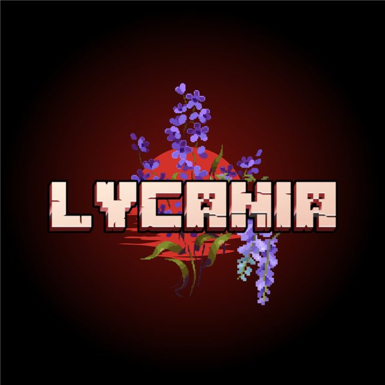

Les Loups
Héritiers d'Aldren. La malédiction coule dans leurs veines et s'éveille sous la lune rouge. Chaque nuit les rapproche un peu plus de la bête.

Un ancien village, une relique volée, et une lune qui n'aurait jamais dû redevenir rouge.
Synopsis
Lycania est un ancien village entouré de mystères, où les histoires de Loups et de Vampires ne sont plus que de vieilles légendes auxquelles presque plus personne ne croit.
Une seule personne refuse de les oublier : Marcus Bryshon, le chef du village. Depuis toujours, il dit veiller sur la Pierre de Clair de Lune, une ancienne relique qui maintient le Voile protecteur autour de Lycania et protège ses habitants d'une malédiction.
Mais un jour, la Pierre disparaîtra…
La lune deviendra rouge pour la première fois depuis des siècles, et le monde que vous connaissez basculera. Les premières transformations apparaîtront, et les anciens clans des Loups, des Vampires et des Chasseurs renaîtront.
Un rôle vous sera attribué, et vous devrez survivre.
Les trois clans
Héritiers d'Aldren. La malédiction coule dans leurs veines et s'éveille sous la lune rouge. Chaque nuit les rapproche un peu plus de la bête.
Héritiers de Lysandra. Immortels, affamés, patients. Ils marchent parmi les villageois depuis que le Voile s'est fissuré — peut-être depuis plus longtemps encore.
Fidèles à la mémoire d'Elias. Ils savent que les légendes disent vrai, et qu'il faudra du fer, du feu et du sang-froid pour que l'humanité survive.
La chronique
Il y a près de 900 ans, trois enfants découvrirent un ancien temple caché au cœur de la forêt. En son centre reposaient deux mystérieux artefacts, accompagnés d'une inscription runique :
« Que nul ne réveille les Héritages. »Elias prit peur et supplia ses amis de partir, mais la curiosité fut plus forte. Aldren posa sa main sur le premier artefact et Lysandra s'empara du second.
Cette nuit-là, le ciel se teinta de rouge et la malédiction s'abattit sur les habitants : certains furent transformés en Loups, d'autres en Vampires. Ainsi débuta la Guerre des Maudits.
Pour réparer leur erreur, les trois amis, devenus adultes, offrirent leur vie dans un ancien rituel. De leur sacrifice naquit la Pierre de Clair de Lune — et le Voile, une immense barrière invisible qui endormit la malédiction et ramena la paix… pendant neuf siècles.
La Pierre a été volée. Marcus Bryshon sombre peu à peu dans la folie et répète sans cesse que « le Voile finira par tomber ». Les habitants n'y voient que les divagations d'un vieil homme.
Pourtant, il avait raison. Dès l'instant où la Pierre quitta son piédestal, les âmes d'Aldren, de Lysandra et d'Elias furent libérées — et revinrent parmi les vivants en prenant discrètement possession de nouveaux corps.
Elles sont déjà à Lycania. Peut-être sont-elles vos voisins… ou peut-être que c'est vous.
Vous arrivez au village alors que Marcus vit ses derniers jours. À sa mort, un nouveau chef devra être élu. Mais il sera déjà trop tard : le Voile s'effondrera peu à peu, les premières transformations apparaîtront, et chacun devra choisir son camp… avant que la malédiction ne s'empare définitivement de Lycania.
Rejoindre le village
Windows · macOS · Linux